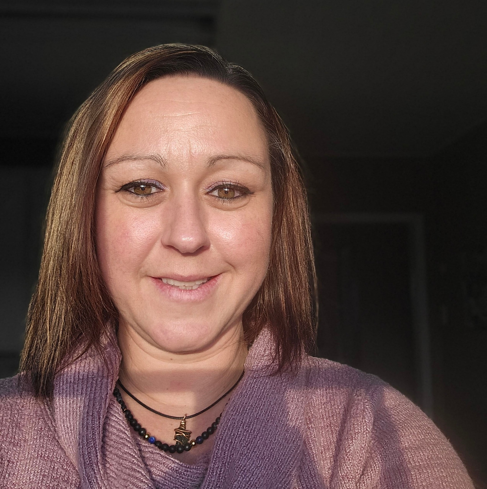
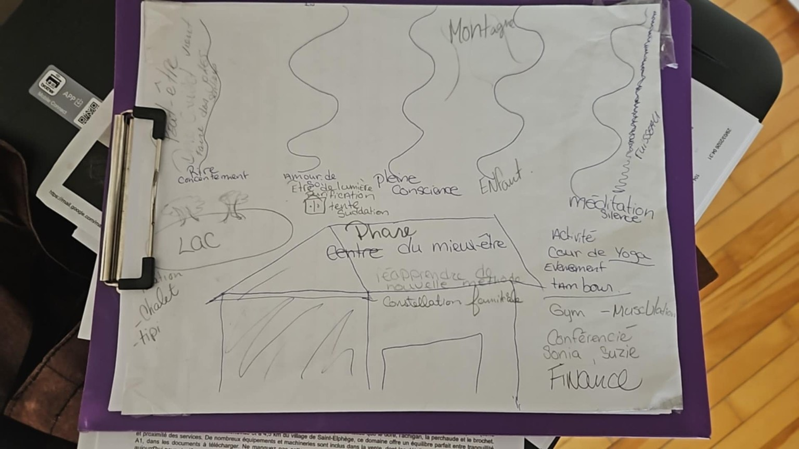

Nature
Un lieu connecté au lac, à la montagne et aux sentiers pour favoriser le calme et l’ancrage.

La créatrice
Stéphanie Bilodeau est la personne derrière l’idée du Centre Mieux-Être. Animée par une vision humaine, chaleureuse et tournée vers le bien-être, elle a imaginé un lieu où la nature, le repos, l’hébergement et les activités se rencontrent pour offrir une expérience complète.
Son objectif était de créer un espace accueillant où les gens peuvent ralentir, respirer, bouger, se recentrer et vivre des moments significatifs dans un environnement paisible.
Le début du projet
Au tout début, le projet a pris forme de manière simple et très authentique. Les premières idées ont été dessinées à la main sur un carton, avec une vision claire de ce que pourrait devenir le centre.
Ce croquis de départ représentait déjà plusieurs éléments importants du site : le lac, la montagne, les sentiers, les hébergements, les espaces de méditation, les activités et les zones de mieux-être.
Cette première ébauche à la main montre bien que le projet est né d’une inspiration réelle, d’une réflexion personnelle et d’un désir profond de bâtir un lieu unique.

Le Centre Mieux-Être a été pensé comme un espace complet, doux et inspirant.
Un lieu connecté au lac, à la montagne et aux sentiers pour favoriser le calme et l’ancrage.
Des espaces et des activités pensés pour le ressourcement, la détente et l’équilibre.
Un projet né d’idées dessinées à la main, avec une vision sincère et profondément humaine.
“D’un simple dessin à la main est née une vision : créer un lieu où l’on peut se déposer, se retrouver et prendre soin de soi.”